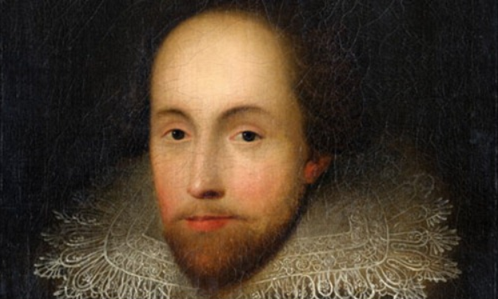
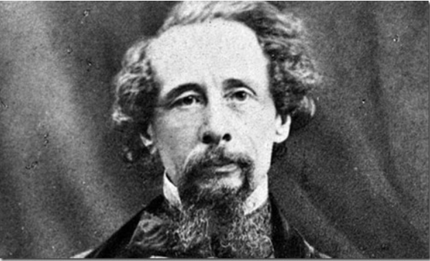
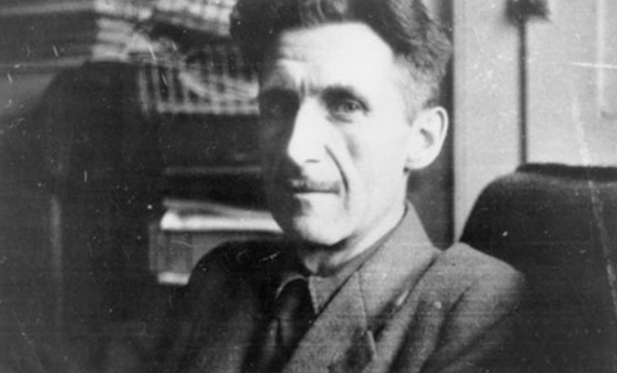
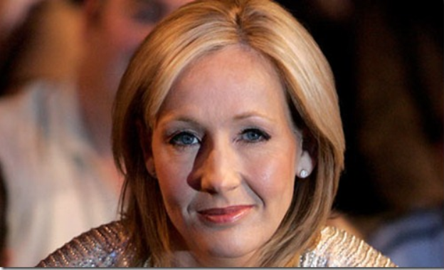
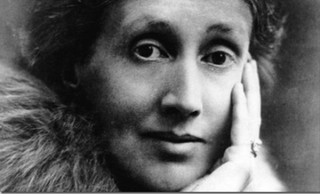
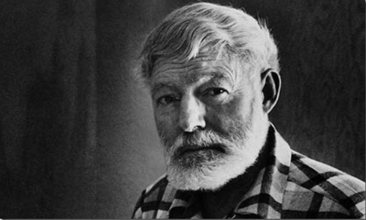
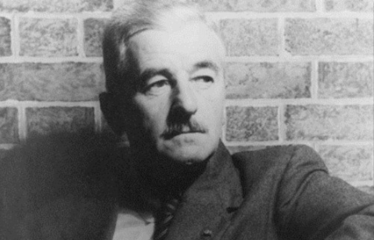
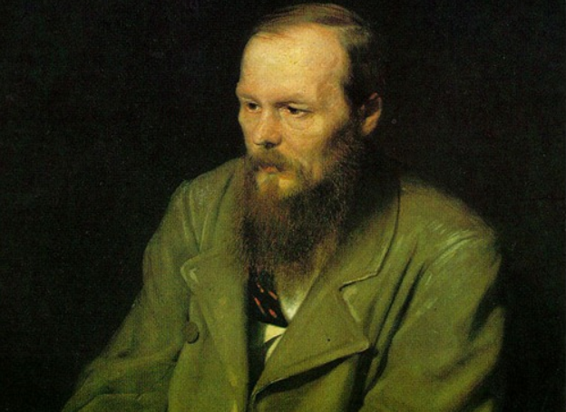
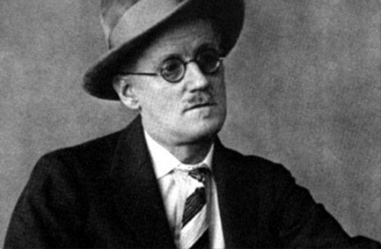
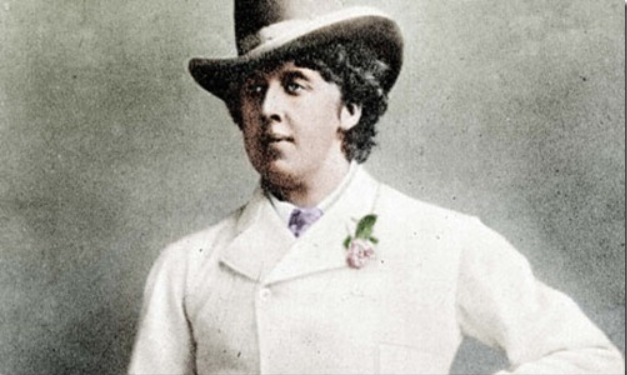

Top Ten Authors of All Time
1. William Shakespeare
William Shakespeare needs absolutely no introduction at all. He was born on the 26th April of 1564 in England. He is regarded as the best writer in the English speaking world and is often referred to as the National Poet of England. It is not known exactly how many plays he wrote, but if you considered the ones that survived plus a few collaborations, it comes to a total of 38 different plays and ten of the greatest ones (opinion) are listed below. He died in England on the 23rd April of 1616.
2. Charles Dickens
Charles John Huffan Dickens was born on the 7th February of 1812. He was an English writer and social critic. We had to read many of his stories back in school. He is most notable for his works The Pickwick Papers, Oliver Twist, A Christmas Carol, David Copperfield, Bleak House, Hard Times, A Tale of Two Cities and Great Expectations. He was married to Catherine Thomson Hogarth and had a whole lot of children. He started writing early and he shot to fame in 1836 when he wrote The Pickwick Papers and within a few years of that his fame crossed the international borders.
3. George Orwell
His actual name is Eric Arthur Blair and he was born on the 25th June of 1903. He was an English journalist and novelist. He died on the 21st January 1950 and is known for Homage to Catalonia, Animal Farm and Nineteen Eighty-Four essays. He was first married to Eileen O’Shaughnessy and that marriage ended with her death. He was then married to Sonia Borwnell and that marriage ended with his death.
4. J.K. Rowling
Most of you young ones out there probably were not familiar with the writers mentioned above but J.K. Rowling is particularly famous with a lot of age groups. She is a British novelist and became famous with her series of seven books by the name of ‘Harry Potter’. She was born on the 31st July of 1965 in Yate, Gloucestershire, England. She is currently married to Neil Murray and has two daughters and one son. She is coming up with a new adult novel called ‘The Casual Vacancy’. It should be published on the 27th September of this year.
5. Virginia Woolf
She was an American writer but had a British nationality. Adeline Virginia Woolf was born on the 25th January in 1882. Her most famous works include To the Lighthouse, Mrs. Dalloway, Orlando: A Biography and A Room of One’s Own. She was married to Leonard Woolf which ended in the year 1941 with her death. She died on the 28th March in 1941 when she was 59 years old.
6. Ernest Hemingway
This is another writer that needs no introduction. Earnest Miller Hemmingway was born on the 21st July of 1899 and was an American author and journalist. He had a strong influence on the 20th century fiction. This guy won the Nobel Prize in Literature in 1954. He has published around seven novels, six short stories and two non-fiction works. He has been married many times in his lifetime (four) and the longest one of his marriages stayed for fifteen years. Earnest died on the 2nd July of 1961.
7. William Faulkner
William Cuthbert Faulkner was born on the 25th September of 1897. He is a Nobel laureate from Oxford, Mississippi. He is an American writer and has written many novels, short stories, essays and screenplays. He is popular for his novels and short stories though and interestingly, most of them are set in a fictional Yoknapatawpha County. He is known for The Sound and the Fury, As I Lay Dying, Light in August, Absalom, Absalom! And A Rose for Emily. He was married to Estelle Oldham and he died on the 6th July of 1962.
8. Fyodor Dostoyevsky
This particular writer comes from Russia. Fyodor Mikhailovich Dostoyevsky was born on the 11th November in 1821. He used to write novels, short stories and essays. His works would generally talk about human psychology and the troubled political and social society of the Russian world. His most notable works include Notes from Underground, Crime and Punishment, The Idiot, Demons and The Brothers and Karamzov. He was married to Maria Dmitriyevna Isayeva who died in 1864. Fyodor died on the 9th February 1881.
9. James Joyce
This is another Irish novelist and poet. James Augustine Aloysius Joyce was born on the 2nd February of 1882 and is considered to be very influential at the time. He is best known for Ulysses, Dubliners, A Portrait of the Artist as a Young Man and Finnegans Wake. You can find a statue of James Joyce on the North Earl Street in Dublin, Ireland.
10. Oscar Wilde
Oscar Wilde was an Irish writer and poet. His actual name is Oscar Fingal O’Flahertie Wills Wilde and he was born on the 16th October in 1854 in Dublin, Ireland. In the early 1890s, he became the most famous playwrights in all of London and he is remembered by his plays now. He is imprisoned which later led to his early demise; something we will not be discussing here. He was married to Constance Lloyd and his most notable works include The Importance of Being Earnest and the Picture of Dorian Gray.